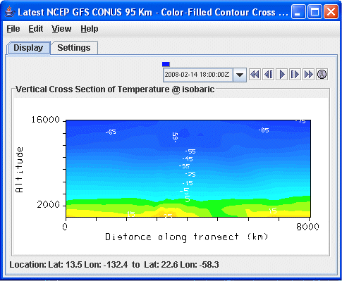
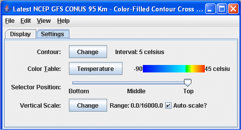

Vertical Cross Section Controls
Overview
The Vertical Cross Section Controls are used to adjust vertical cross section displays. Vertical cross sections can be made in three types of displays: Contour, Color-Filled Contour, and Color-Shaded. The control window has two tabs: Display and Settings. The endpoints of the cross section can be moved by clicking and dragging the endpoints in the Main Display window.
The Display tab includes a duplicate of
the display in the Main Display window:

Image 1: Display Tab of the Layer Controls Tab
Properties
 Time Animation Control - Controls the looping of displays through time. See more in Time Animation Control.
Time Animation Control - Controls the looping of displays through time. See more in Time Animation Control.- Distance along transect - Depicts the horizontal distance the cross section covers in the Main Display window. This can be changed by left-clicking and dragging the end points of the cross section in the Main Display.
- Location - Displays the location of the end points of the cross section. The endpoints of the cross section can be changed by entering in new values and hitting Enter.
The Settings tab shows the settings for this display control:

Image 2: Settings Tab of the Layer Controls Tab
Properties
- Contour - Sets contour parameters. Click
 next to Contour to open the Contour
Properties Editor. This control can be accessed with the Contour Cross Section and Color-Filled Contour Cross Section views.
next to Contour to open the Contour
Properties Editor. This control can be accessed with the Contour Cross Section and Color-Filled Contour Cross Section views.
- Color Table - Shows the active color table and the associated high and low data values in the units of the display. As the mouse pointer is moved over the color bar, the value at a particular color is shown. Right click on the color bar or click on the button that displays the name of the Color Table to make modifications to the color bar. This allows for opening the Color Table Editor, changing the range, selecting other color tables, etc.
- Visible Range - Sets the range of data displayed when using the Color-Shaded Cross Section display type.
- Selector Position - Sets the position of the selector in the Main Display. This can be changed by using the slider or by typing a value into the field and hitting Enter.
- Smoothing - Smooths the grid that can be used to smooth contour lines or flow fields in the display. There are seven types of smoothing: None, 5-point, 9-point, Gaussian, Cressman, Circular, and Rectangular weighted smoothers. The smoothing factor can be adjusted for all except the 5-point and 9-point smoothers. The higher the value, the smoother the grid. For the Cressman, Circular and Rectangular aperture smoothing types, the smoothing factor is the radius in grid spacing units.
- Vertical Scale - Changes the vertical axis range of the cross section.
- Autoscale - Scales the Y-Axis automatically to the data range along the selector line in the display.
- Visible Range - Determines what parts of the data is actually shown. Click the button to set the range of data shown. Once the checkbox is checked, the Visible Range will be applied to the data in the cross section. This is an option for the Color-Shaded Cross Section display type.
- Shade Colors - Colors every pixel to give a smooth gradation of color. The alternative is coloring an area of pixels corresponding to a single data grid cell with one color. This is an option for the Color-Shaded Cross Section display type.
Menus
Many of the menu items seen utilizing this display are standard options that can be found in the Menus section of the Layer Controls page. However, there are some options that are unique to this display.
The Edit menu has this unique option:
- Change Contours - Opens the Contour Properties Editor to change how the contours appear in the Main Display window. This is an option for the Contour Cross Section and Color-Filled Contour Cross Section display types.
- Properties - Opens a Properties window that includes a Cross Section tab. The Cross Section tab allows for controlling most aspects of the display in the Layer Controls.
The View menu has these unique options:
- Use Data Projection - Re-centers the display and resets the zoom level back to the display's initial settings without changing any other preferences that have been modified.
- Enable Adaptive Resolution (Under Development) - Turns adaptive resolution on or off for the layer. This menu item is only available if adaptive resolution is enabled in the User Preferences. Note that adaptive resolution is still under development.
- Cross Section - Allows for capturing an image or movie of the cross section display. Additional properties of the Cross Section, such as the background color, can also be set.